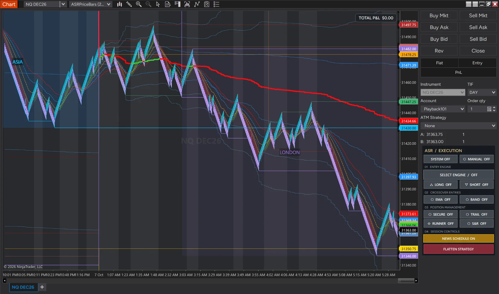
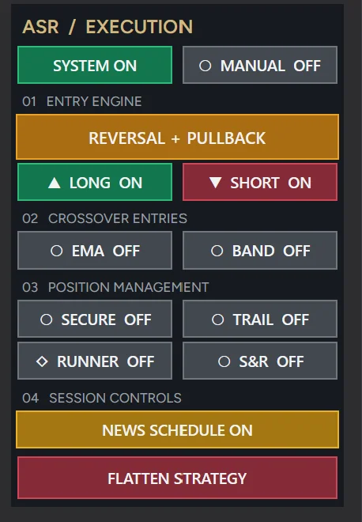

ASRPriceBars
Custom price-driven chart construction with wick behavior designed to make movement-based structure easier to follow across configurable bar sizes.
Explore price bars →Custom price bars, market-context indicators and manual or automated execution for NinjaTrader 8 futures traders. Read price movement and manage trades in one connected workspace.
Genuine NinjaTrader screenshots from ASR development and simulation. Explore the interface before expressing interest.

Price structure, analysis and execution controls shown together, with the ASR system switched off.
Development / simulation captures, not live performance evidence. Interface states and features may differ between builds. Chart values have not been altered. These images do not establish profitability or customer readiness.
Explore the three core components of ASR. The descriptions below reflect the current software design; performance and customer-readiness remain subject to private-beta testing.
Custom price-driven chart construction with wick behavior designed to make movement-based structure easier to follow across configurable bar sizes.
Explore price bars →A coordinated set of market-context tools covering trend, momentum, volatility, levels and pressure. Each tool provides context rather than a promise of predictive accuracy.
Explore indicators →Manual controls and configurable execution modes, including Reversal + Pullback and Momentum, with trade-management options subject to simulated validation.
Explore execution →ASR — Adaptive Structure & Response — is being developed as an integrated trading environment, not a collection of disconnected indicators and buttons.
Price construction, contextual analysis and execution management are designed to work together so the trader can move from reading market conditions to managing a position without changing workflows.
Configurable automated and manual execution with professional trade-management controls.
Discover executionProprietary price-driven chart construction designed around movement rather than elapsed time.
Discover price barsA coordinated analysis suite for structure, pressure, volatility, trend, levels and market state.
Discover intelligenceThe ASR Execution Engine is designed around selective execution and user-defined risk. Different models evaluate different market behaviours while the trader retains authority over configuration and trade management.
The execution modes are under private-beta validation. Signals, stops, targets and order handling must be tested in simulation before any live use. Proprietary entry calculations are not published.

ASRPriceBars organize charts around price movement rather than a conventional fixed-time interval.
Chart formation responds to movement in price rather than waiting for a time interval to expire.
Multiple configurations support different chart scales and trading approaches.
Designed to operate with the ASR analysis and execution environment.
ASR's analysis layer organizes different dimensions of market behaviour into a cleaner decision environment.
Distinguish directional conditions from less structured price behaviour.
Visual context for changing market activity and expansion.
Buyer and seller pressure context designed for rapid interpretation.
Evaluate directional expansion and momentum conditions.
Organize important market references and intraday context.
Additional trend and crossover context within the ASR environment.
Explore the three connected layers behind ASR. Each layer has a distinct role; together they provide a structured workspace for discretionary and configurable automated trading.
ASRPriceBars construct charts from price movement, giving you a different way to organize market structure.
Use trend, volatility, pressure and structure tools to assess the market context before taking action.
Choose manual execution or a configurable ASR execution mode, with stop, target and trade-management controls.
ClarityInformation should be readable without overwhelming the chart.
ControlAutomation should remain configurable by the trader.
IntegrationBars, analysis and execution should behave as one environment.
DisciplineRisk and execution controls are part of the workflow—not an afterthought.
ASR Trading System is preparing for limited private-beta testing.
A compiled beta candidate has been prepared. Customer access remains closed while licensing, clean installation and independent simulated playback checks are completed. Pricing and a release date have not been announced. Registering interest does not create an account, reserve a license or guarantee an invitation.
Not yet. ASR is preparing for limited private-beta testing. Public availability and pricing will be announced only after validation and vendor onboarding are complete.
ASR is being developed for NinjaTrader 8 Desktop, with a focus on futures trading.
Yes. ASR includes manual controls and configurable execution modes such as Reversal + Pullback and Momentum. Automated order handling requires careful simulation testing.
No. ASR provides software tools, not guaranteed outcomes. Futures trading can result in substantial losses, and simulated results may differ from live trading.
Futures traders who use NinjaTrader 8 and are willing to evaluate the ASR workflow in simulation and report issues. ASR requires trader supervision and configuration; the beta is not a promise of trading results.
The planned environment brings together ASRPriceBars, ASR indicators and execution controls. Final package contents, pricing, support and license terms will be confirmed before commercial purchase. There is currently no checkout on this website.
Interest is not an invitation or a license reservation. After installation, licensing and simulation checks, selected testers will receive participation details. Email delivery is awaiting verification; only a reply from ASR confirms that your inquiry was received.
Licensing integration is under validation. Device restrictions, customer activation and renewal procedures will be confirmed before customer release.
ASR is preparing a limited testing phase. Register your interest below. If selected after validation, you will receive the access details and testing instructions before deciding whether to participate.
Contact delivery is awaiting verification. Please do not rely on this form for urgent support or assume your request has been received. No payment or trading-account details are requested.
For product, licensing, installation or business inquiries, contact the ASR support team.
support@asrtradingsystem.comSend Product Inquiry